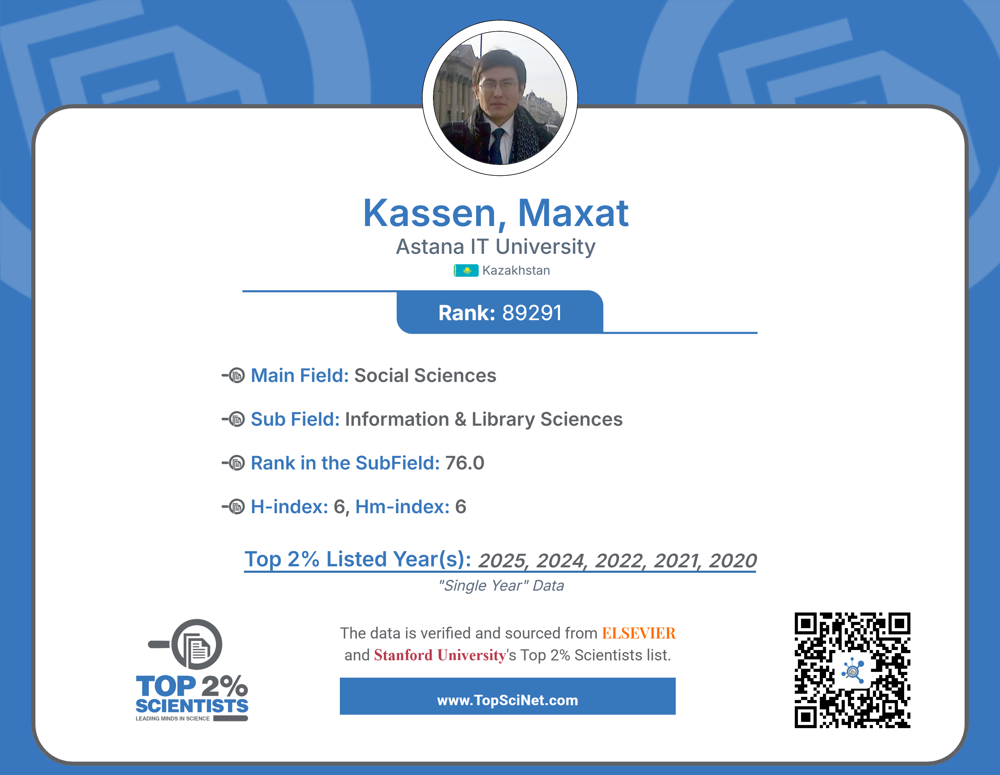

Ғылымдағы көшбасшылығы үшін Стэнфорд университеті тағайындайтын - «The Stanford World's Top 2% Scientist Award 2025» халықаралық ғылыми сыйлығының лауреаты (АҚШ)
Профессор Максат ҚАСЕН Стэнфорд университетінің (АҚШ) рейтингі бойынша 2020–2025 жылдар аралығында әлемдегі ең үздік ғалымдардың 2 пайызының қатарына енді. Бұл рейтинг зерттеушілердің ғылымға қосқан үлесін бағалайтын әлемдегі ең беделді ғылыми рейтингтердің бірі болып саналады.
Рейтинг Elsevier халықаралық академиялық агенттігі қалыптастыратын Scopus дерекқорының библиометриялық көрсеткіштеріне негізделеді. Бұл рейтингке әлемнің 180 000-нан астам жетекші ғалымы енгізілген. Рейтингті профессор Джон Иоаннидис бастаған Стэнфорд университетінің ғалымдар тобы әзірлеген. Олар Science-Metrix әдіснамасы негізінде 22 ғылыми бағыт пен 174 ғылыми ішкі санат бойынша зерттеушілердің ғылыми көрсеткіштерін талдайды. Бағалау барысында еңбектердің дәйексөзделу деңгейі, Хирш индексі (h-index), hm-index және жиынтық c-score көрсеткіші ескеріледі.
Профессор Максат ҚАСЕНнің осы таңдаулы ғылыми тізімге енуі оның электрондық үкімет феномені мен оған сабақтас ғылыми бағыттардағы зерттеулерінің халықаралық деңгейде мойындалғанының тағы бір дәлелі болып табылады. Бұған дейін ғалым бірнеше беделді халықаралық ғылыми марапаттарға ие болған. Олардың қатарында Fulbright Scholar Award – 2012 халықаралық ғылыми сыйлығы (АҚШ Федералдық үкіметі, Вашингтон қаласы), Scopus Award – 2018 халықаралық ғылыми сыйлығы (Elsevier агенттігі, Нидерланды) және Leader of Science: Web of Science Award 2020 халықаралық ғылыми сыйлығы (Clarivate Analytics агенттігі, АҚШ) бар.
Стэнфорд университетінің әлемдегі ең үздік 2 пайыз ғалымдар тізімі (АҚШ)
